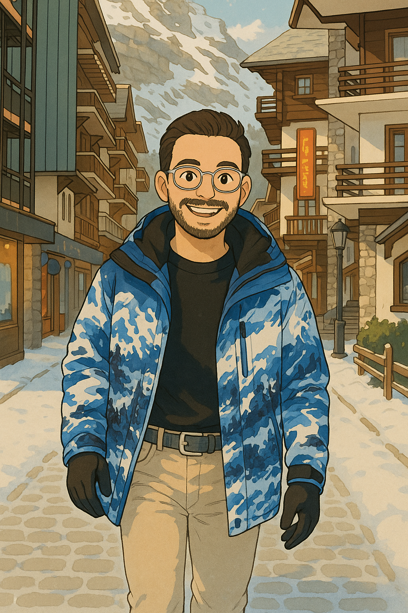

אודותיי
היי, אני אדיר.
אני מתעניין בתשתיות, תחבורה ומערכות מורכבות, ובעיקר באיך הן עובדות ואיך אפשר לשפר אותן לאורך זמן. מעניין אותי לחשוב בצורה מערכתית. להבין למה דברים נראים כמו שהם נראים היום, איפה הם נתקעים, ואיך אפשר לגרום להם לעבוד בצורה נוחה, יעילה והגיונית יותר עבור מי שמשתמש בהם בפועל.
אני נמשך לפתרונות פרקטיים. כאלה שמגיעים מתכנון טוב יותר, משינויים מבניים, ומחשיבה אחרת על מה שכבר קיים. הרבה שיפורים לא מתחילים מדברים גדולים או דרמטיים, אלא מהבנה טובה יותר של המערכת, של המגבלות שלה, ושל האופן שבו אנשים באמת משתמשים בה.
טכנולוגיה היא חלק טבעי מהיום יום שלי. לא רק כעבודה, אלא כסקרנות מתמשכת. אני אוהב לנסות, לשפר, ולראות איך מערכות מתנהגות בעולם האמיתי. להבין מה עובד, מה פחות, ואיפה אפשר לעשות משהו קצת יותר חכם או פשוט.
קפה הוא משהו שאני נהנה ממנו. לא בכמות, אלא באיכות ובהתנסות שמסביב. לטעום, לנסות, ולגלות מה עובד לי. באותה גישה אני גם אוהב לשתות בירות שונות, בעיקר מתוך סקרנות והנאה מהגיוון.
וכשאני צריך שינוי קצב, אני מחפש תנועה. לפעמים זה שלג וסנובורד, לפעמים פשוט יציאה מהשגרה. מקומות שבהם הראש נרגע והדברים מסתדרים לבד.

ניסיון מקצועי
אני מהנדס DevOps בצק פוינט, שם אני עובד כבר למעלה מ-6 שנים. מילאתי תפקידים שונים מ QA ועד הובלת צוות, תוך התמקדות בבדיקות מוכוונות לקוח ובתשתיות. לפני שהצטרפתי לצק פוינט, עבדתי כמהנדס רשתות בבזק, שם ניהלתי תשתיות רשת ליבה וסיפקתי תמיכה טכנית ללקוחות ארגוניים. לאורך הקריירה שלי, נמשכתי להבנה איך מערכות עובדות בפועל, איך אנשים משתמשים בהן באמת, ואיך אפשר להפוך אותן ליותר אמינות ויעילות.